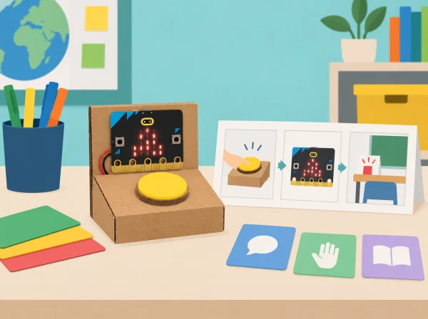

El centre vol millorar una rutina quotidiana: demanar una pausa, recordar una tasca de descans visual o avisar discretament que cal suport. Els equips investiguen exemples de tecnologia de salut i benestar, delimiten què pot fer un prototip escolar i dissenyen una ajuda amb micro:bit. El repte parteix de necessitats fictícies o consultades voluntàriament amb persones adultes; ningú ha de revelar informació personal.
La proposta transforma la unitat oficial en un projecte de disseny accessible. La placa mostra icones o missatges breus quan l’usuari prem un botó; la decisió de quan usar-la continua sent seua. No hi ha sensors corporals, monitoratge, diagnòstic ni registre d’identitat.
Micro:bit, ordinador amb MakeCode, cable USB i cartó reutilitzat. La placa incorpora botons, matriu LED, acceleròmetre i sensor de llum; aquesta proposta només necessita els botons i la matriu. Si es munta un interruptor extern, reviseu connexions i pin disponible abans d’afirmar-ne la compatibilitat. La simulació de MakeCode i un guió de paper permeten provar l’algorisme sense placa.
No recolliu diagnòstics, noms, imatges, veu, ritmes corporals ni registres d’ús. La persona ha de poder no participar, aturar el dispositiu i triar si vol resposta visual o sonora. Eviteu llums intermitents ràpides i sons inesperats; oferiu instruccions en text, pictogrames i demostració. Expliqueu que és un prototip educatiu, no un dispositiu mèdic ni un servei d’emergència.
Carpeta de casos investigats, mapa de necessitat fictícia, tres esbossos, criteris de selecció, pseudocodi, programa, proves d’ús voluntàries i millores. Valoreu la justificació del disseny, la depuració, l’accessibilitat i la capacitat d’explicar dades que deliberadament no s’han recollit.
Adapta les cinc lliçons de Health tech: Health of the nation, Health tech innovations, Prototyping innovations, Preparing presentations i Health tech showcase. El context de rutines escolars i el prototip de comunicació són propis; s’han exclòs aplicacions diagnòstiques i mesures de salut.